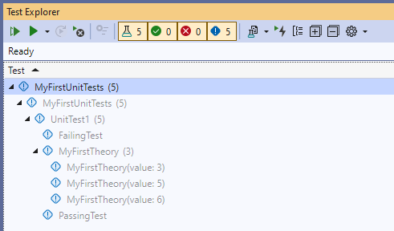
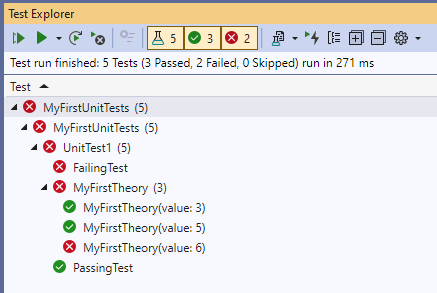
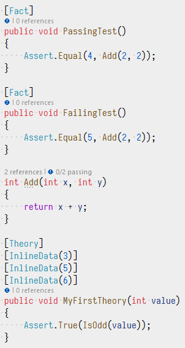
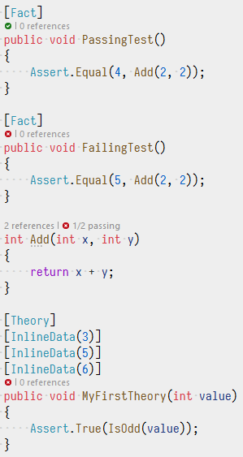

Getting Started with xUnit v3
Using .NET or .NET Framework with the .NET SDK command line
This guide demonstrates how to get started with xUnit.net v3 when targeting .NET 6 (or later) and/or .NET Framework 4.7.2 (or later). You'll learn how to download the .NET SDK, install the .NET SDK templates, create a unit test project, write your first tests and theories, and run tests using the command line.
Note
The examples were done with C#, xUnit.net v3 1.0.0, .NET SDK 8.0.404, and .NET 8. The version numbers, paths, and generated templates may differ for you, depending on the versions you’re using. The instructions for .NET vs. .NET Framework are identical other than picking the appropriate target framework; however, being able to build and run .NET Framework tests on Linux or macOS requires installing Mono first.
Download the .NET SDK
The .NET SDK is available for download for Windows, Linux, and macOS.
Once you’ve downloaded and installed the SDK, open a fresh command prompt of your choice (CMD, PowerShell, bash, etc.) and make sure that you can access the command line by typing dotnet --version.
You should be rewarded with a single line, describing the version of the .NET SDK you have installed:
$ dotnet --version
8.0.404
Note
The first time you run the dotnet command, it may perform some post-installation steps.
Once these one-time actions are done, it will execute your command.
Install the .NET SDK templates
We ship templates for creating new projects, and they must be installed before they can be used.
From your command prompt, type: dotnet new install xunit.v3.templates
You should see the output similar to this:
$ dotnet new install xunit.v3.templates
The following template packages will be installed:
xunit.v3.templates
Success: xunit.v3.templates::1.0.0 installed the following templates:
Template Name Short Name Language Tags
------------------------------ ---------------- ---------- ----------
xUnit.net v3 Extension Project xunit3-extension [C#],F#,VB Test/xUnit
xUnit.net v3 Test Project xunit3 [C#],F#,VB Test/xUnit
As of this writing, we ship two templates: xunit3 and xunit3-extension.
These are available in three languages: C#, F#, and VB.NET.
Create the unit test project
From the command line, create a folder for your test project, change into it, and then create the project using dotnet new:
$ mkdir MyFirstUnitTests
$ cd MyFirstUnitTests
$ dotnet new xunit3
The template "xUnit.net v3 Test Project" was created successfully.
Processing post-creation actions...
Restoring /.../MyFirstUnitTests/MyFirstUnitTests.csproj:
Determining projects to restore...
Restored /.../MyFirstUnitTests/MyFirstUnitTests.csproj (in 1.48 sec).
Restore succeeded.
The generated project file should look something like this:
<Project Sdk="Microsoft.NET.Sdk">
<PropertyGroup>
<ImplicitUsings>enable</ImplicitUsings>
<Nullable>enable</Nullable>
<OutputType>Exe</OutputType>
<RootNamespace>MyFirstUnitTests</RootNamespace>
<TargetFramework>net8.0</TargetFramework>
<!--
To enable the Microsoft Testing Platform 'dotnet test' experience, add property:
<TestingPlatformDotnetTestSupport>true</TestingPlatformDotnetTestSupport>
To enable the Microsoft Testing Platform native command line experience, add property:
<UseMicrosoftTestingPlatformRunner>true</UseMicrosoftTestingPlatformRunner>
For more information on Microsoft Testing Platform support in xUnit.net, please visit:
https://xunit.net/docs/getting-started/v3/microsoft-testing-platform
-->
</PropertyGroup>
<ItemGroup>
<Content Include="xunit.runner.json" CopyToOutputDirectory="PreserveNewest" />
</ItemGroup>
<ItemGroup>
<Using Include="Xunit" />
</ItemGroup>
<ItemGroup>
<PackageReference Include="Microsoft.NET.Test.Sdk" Version="17.12.0" />
<PackageReference Include="xunit.v3" Version="1.0.0" />
<PackageReference Include="xunit.runner.visualstudio" Version="3.0.0" />
</ItemGroup>
</Project>
Let’s quickly review what’s in this project file:
ImplicitUsingsenables implicitusingstatements in your project.
In addition to the default set of implicitusingstatements, you can see below that we’ve added an implicitusingfor theXunitnamespace where the most common xUnit.net types come from.
More information about implicit usingsNullableis enabled in this default template.
Our libraries including nullable annotations to help you find when you may be accidentally dealing withnullvalues.
For example,Assert.NotNullis decorated in such a way that the compiler knows, if this assertion did not fail, then the value passed to it is known to not benull.
More information about nullable reference typesOutputTypeis set toExe, because unit test projects in xUnit.net v3 are stand-alone executables that can be directly run.
We will see examples of this later in this document.
More information about xUnit.net v3 and stand-alone executablesTargetFrameworkis set tonet8.0(which is the latest LTS build as of the writing of this document).
More information about target frameworksWe have included an
xunit.runner.jsonfile in your project by default.
You can edit this file and place configuration values into it.
More information about xUnit.net configuration filesWe have included three package references:
- xunit.v3 is the core package needed to write unit tests for xUnit.net v3
xunit.runner.visualstudioandMicrosoft.NET.Test.Sdkare used to enable support fordotnet testand Visual Studio Test Explorer
A single unit test was also generated (UnitTest1.cs in this example):
namespace MyFirstUnitTests;
public class UnitTest1
{
[Fact]
public void Test1()
{
Assert.True(true);
}
}
Now let’s verify that everything is working by running our tests with dotnet run:
$ dotnet run
xUnit.net v3 In-Process Runner v1.0.0+fd19795321 (64-bit .NET 8.0.8)
Discovering: MyFirstUnitTests
Discovered: MyFirstUnitTests
Starting: MyFirstUnitTests
Finished: MyFirstUnitTests
=== TEST EXECUTION SUMMARY ===
MyFirstUnitTests Total: 1, Errors: 0, Failed: 0, Skipped: 0, Not Run: 0, Time: 0.059s
Note
You can pass command line options to the test runner when using dotnet run, but you must add -- before passing any command line options.
The reason for this is that the .NET SDK differentiates command line options before the -- as command line options for
dotnet run itself vs. command line options after the -- as command line options for the program.
Try running dotnet run -? and dotnet run -- -? to see the difference.
Excellent! Let’s go replace that sample unit test with our first real tests.
Write your first tests
Using your favorite text editor, open the UnitTest1.cs file and replace the existing test with two new ones:
namespace MyFirstUnitTests;
public class UnitTest1
{
[Fact]
public void PassingTest()
{
Assert.Equal(4, Add(2, 2));
}
[Fact]
public void FailingTest()
{
Assert.Equal(5, Add(2, 2));
}
int Add(int x, int y)
{
return x + y;
}
}
If we run the tests again, we should see something like this:
$ dotnet run
xUnit.net v3 In-Process Runner v1.0.0+fd19795321 (64-bit .NET 8.0.8)
Discovering: MyFirstUnitTests
Discovered: MyFirstUnitTests
Starting: MyFirstUnitTests
MyFirstUnitTests.UnitTest1.FailingTest [FAIL]
Assert.Equal() Failure: Values differ
Expected: 5
Actual: 4
Stack Trace:
UnitTest1.cs(14,0): at MyFirstUnitTests.UnitTest1.FailingTest()
Finished: MyFirstUnitTests
=== TEST EXECUTION SUMMARY ===
MyFirstUnitTests Total: 2, Errors: 0, Failed: 1, Skipped: 0, Not Run: 0, Time: 0.097s
We can see that we have one passing test, and one failing test. That’s exactly what we would expect given what we wrote.
Now that we’re gotten our first tests to run, let’s introduce one more way to write tests: using theories.
Write your first theory
You may have wondered why your first unit tests use an attribute named [Fact] rather than one with a more traditional name like Test. xUnit.net includes support for two different major types of unit tests: facts and theories. When describing the difference between facts and theories, we like to say:
Facts are tests which are always true. They test invariant conditions.
Theories are tests which are only true for a particular set of data.
A good example of this is testing numeric algorithms. Let’s say you want to test an algorithm which determines whether a number is odd or not. If you’re writing the positive-side tests (odd numbers), then feeding even numbers into the test would cause it fail, and not because the test or algorithm is wrong.
Let’s add a theory to our existing facts (including a bit of bad data, so we can see it fail):
[Theory]
[InlineData(3)]
[InlineData(5)]
[InlineData(6)]
public void MyFirstTheory(int value)
{
Assert.True(IsOdd(value));
}
bool IsOdd(int value)
{
return value % 2 == 1;
}
This time when we run our tests, we see a second failure, for our theory that was given 6:
$ dotnet run
xUnit.net v3 In-Process Runner v1.0.0+fd19795321 (64-bit .NET 8.0.8)
Discovering: MyFirstUnitTests
Discovered: MyFirstUnitTests
Starting: MyFirstUnitTests
MyFirstUnitTests.UnitTest1.FailingTest [FAIL]
Assert.Equal() Failure: Values differ
Expected: 5
Actual: 4
Stack Trace:
UnitTest1.cs(14,0): at MyFirstUnitTests.UnitTest1.FailingTest()
MyFirstUnitTests.UnitTest1.MyFirstTheory(value: 6) [FAIL]
Assert.True() Failure
Expected: True
Actual: False
Stack Trace:
UnitTest1.cs(28,0): at MyFirstUnitTests.UnitTest1.MyFirstTheory(Int32 value)
Finished: MyFirstUnitTests
=== TEST EXECUTION SUMMARY ===
MyFirstUnitTests Total: 5, Errors: 0, Failed: 2, Skipped: 0, Not Run: 0, Time: 0.085s
Although we’ve only written 3 test methods, the test runner actually ran 5 tests;
that’s because each theory with its data set is a separate test.
Note also that the runner tells you exactly which set of data failed, because it includes the parameter values in the name of the test.
Running tests
Note
These screen shots were taken with Visual Studio 2022 version 17.11.0.
Your screen may look slightly different if you have a newer version.
Visual Studio contains a test runner called Test Explorer that can run unit tests from a variety of third party test frameworks, including xUnit.net. The inclusion of xunit.runner.visualstudio (and Microsoft.NET.Test.Sdk) allows Test Explorer to find and run our tests.
Visual Studio works on solutions rather than projects.
If your project doesn’t have a solution file yet, you can use the .NET SDK to create one.
Run the following two commands from your project folder:
$ dotnet new sln
The template "Solution File" was created successfully.
$ dotnet sln add .
Project `MyFirstUnitTests.csproj` added to the solution.
Now open your solution with Visual Studio.
Build your solution after it has opened.
Make sure Test Explorer is visible (go to Test > Test Explorer).
Running tests in Test Explorer
After a moment of discovery, you should see the list of discovered tests:

By default, the test list is arranged by project, namespace, class, and finally test method. In this case, the MyFirstTheory method shows 3 sub-items, as that is a data theory with 3 data rows.
Clicking the run button (the double play button) in the Test Explorer tool bar will run your tests:

You can double click on any test in the list to be taken directly to the source code for the test in question.
Running tests from your source code
You should notice after the build is complete that your unit test source becomes decorated with small blue i icons that indicate that there is a runnable test:

Clicking the i will pop up a panel that will allow you to Run or Debug your tests, as well as navigate to the test inside Test Explorer.
After running the tests, you’ll see that the icons now change to indicate which tests are currently passing vs. failing:
